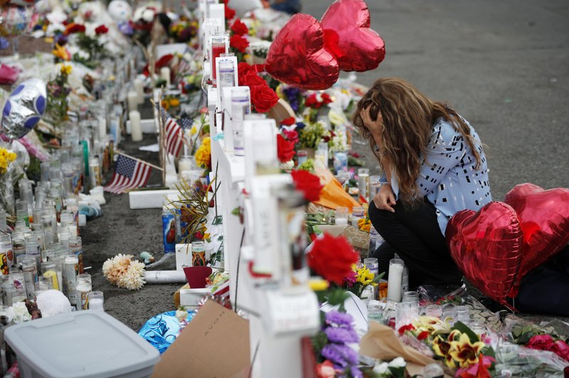
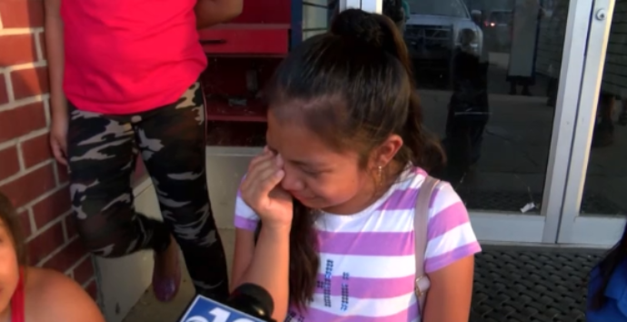

A mass shooting occurred at a Walmart store in El Paso, Texas, on the morning of August 3rd, 2019. A 21yr old man killed 22 people and injured 26 others, causing terror and grief in this town. The FBI is investigating the shooting as an act of domestic terrorism and now shown as a hate crime when the gunman confessed to polices that he targeted "Mexicans". This crime now causes panic all around the United States as there could be another hateful person attacking innocent people. The gunman was seen on Twitter supporting President Trump claims, showing that we all aren't even protected by our own president. This crime now causes tension and controversy on topics like gun control, because many believe that hate crimes are rising and no one is stopping them from happening. Some may say that terrorism is coming from immigrants of other countries, when what they don't realize is that terrorism is coming from within our country.
An estimate of 600,000 migrants have been taken into custody by border patrol and 7 children have died in their custody since 2018. The conditions in these camps or beyond dehumanizing and certainly unfit for many reasons, one main reason being the lack of space for the capacity of people the U.S border control is trying to withhold in the camps. But this doesn't stop border patrol from mistreating and degrading innocent people. The conditions in an all men detention center in Texas was described to be " a horrendous stench and said nearly 400 men were housed in sweltering cages so crowded it would have been impossible for all of them to lie down. The Border Patrol supervisor who gave Pence the tour admitted that the men in custody hadn’t taken a shower in 10 to 20 days.". These claims were brought to president Trump in which he tweeted the detention centers are "exaggerated" and that they are "beautifully run" and "clean." "Great reviews!". Whereas The Department of Homeland Security's Inspector-General, however, called the overcrowded conditions “a ticking time bomb.". This is just one of the many centers that are poorly facilitated.
President Trump has been enforcing ICE to deport illegal or criminal aliens, reducing the population of immigrants. Many families are separated due to the strict enforcement of ICE. The Trump administration has set stricter immigration laws making it harder for immigrants to come and stay in the country. Many immigrants are facing threats of deportation. The Trump administration has also created laws that made legal immigration harder and it is difficult for people to get green cards or visas. It will also be less likely for low-income immigrants to have access to public assistance. People who apply for a green card or visa with low income are more likely to be turned down.
680 undocumented immigrants most of which were Latino were arrested by ICE officers, on August 7th, 2019. Children who were at school came to realize that no one came to pick them up, therefore had to sleep at a school gym or go to a family friends house. This caused sadness to many children one of which was televised outside a gym sobbing to free her father. After all 300 immigrants were released with scheduled court dates 2 days later based on whether they had children or not. These immigrants were taken from seven food processing plants, causing a slow down in work. All in all, undocumented immigrants now fear to be separated from their families simply because they are undocumented, which can happen any day now.